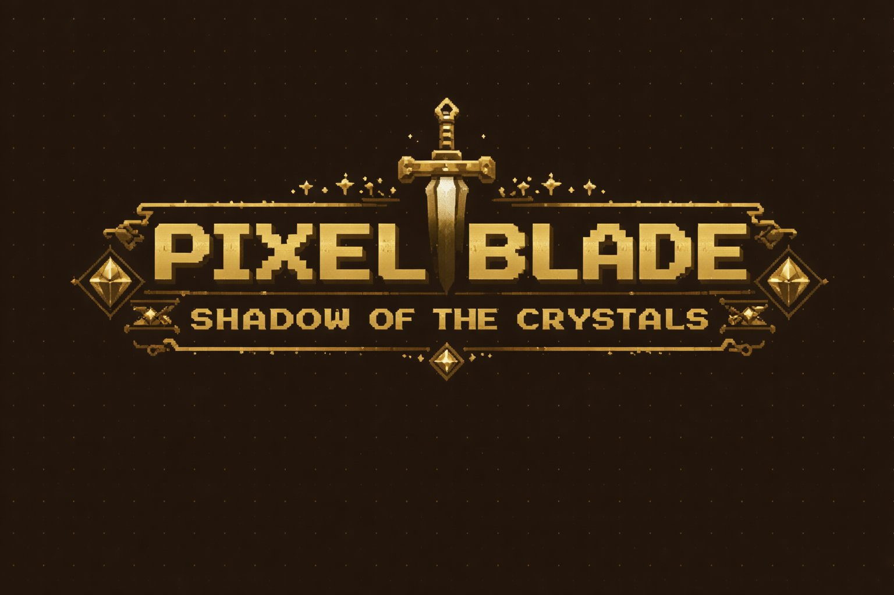
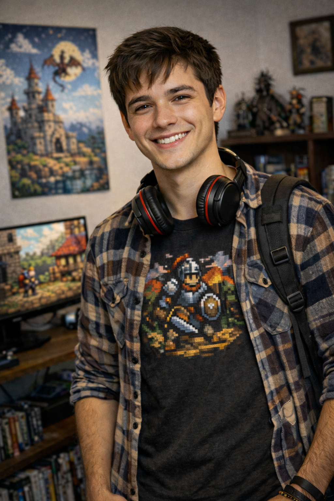

Um reino à beira do colapso.
Três cristais perdidos nas profundezas.
Um cavaleiro enviado para o impossível.
Há muito tempo, os três Cristais do Reino guardavam o equilíbrio entre o mundo dos vivos e as trevas que habitam sob a terra. Mas numa noite sem lua, criaturas das profundezas roubaram as relíquias e as arrastaram para os corredores esquecidos da Dungeon de Ashkarath.
Com o reino enfraquecendo a cada amanhecer, os nobres convocaram o Cavaleiro Aldric — não por ser o mais poderoso, mas por ser o único disposto a descer às profundezas sozinho, sem glória garantida, sem promessa de retorno.
A dungeon é de nível baixo para quem enfrenta o mundo lá fora. Mas no escuro, até um guerreiro experiente pode se perder — e os cristais têm guardiões que não dormem.
ROCHA · LVL 1
Controla as águas e as marés do reino. Guardado na Câmara de Lava.
■ CÂMARA DE LAVA
NATUREZA · LVL 2
Mantém a vegetação e a vida das florestas do reino. Dorme no Salão dos Cogumelos, cercado de esporos letais.
■ SALÃO DOS COGUMELOS
FOGO · LVL 3 ★ CHEFE
Alimenta o calor e a luz do mundo. Câmara Sombria.
■ CÂMARA SOMBRIA
Aldric é um guerreiro experiente, forjado em batalhas que outros recusaram. Sua força não está apenas na espada — está na coragem de enfrentar o desconhecido completamente só.
Ataque poderoso que ignora a armadura do inimigo.

19 ANOS
PLATAFORMA: PC
Apaixonado por games desde criança. Curte jogos indie, pixel art e histórias bem construídas. Jogar, pra ele, é viver uma aventura.
> VOCÊ ESTÁ PRONTO?
OS CRISTAIS AGUARDAM.
A DUNGEON CHAMA.
ALDRIC PRECISA DE VOCÊ.